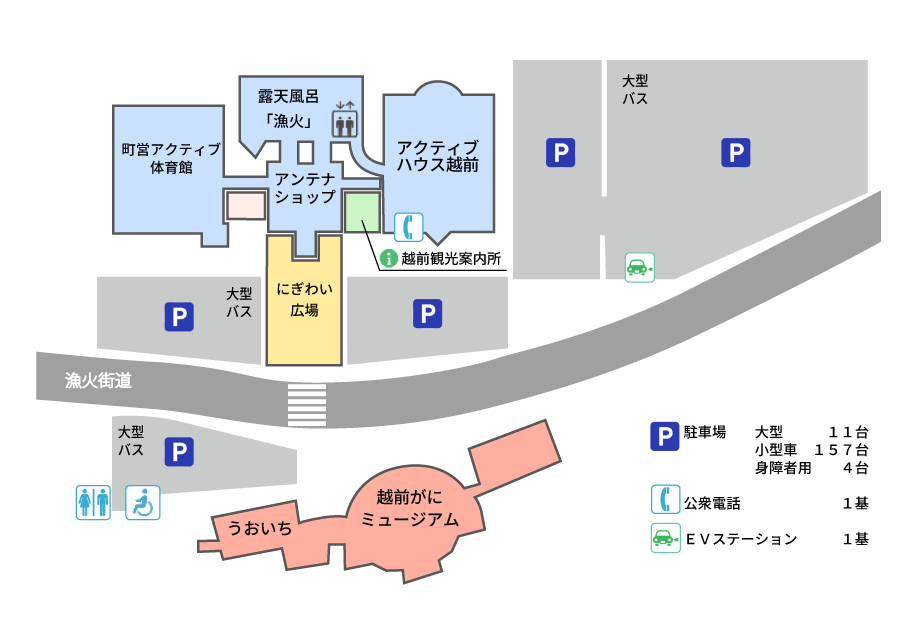

道の駅「越前」は越前加賀海岸地域の中央部の海岸に位置し、観光への玄関口として、広域的観光ルートのゲートウェイとなっています。 町内、県内の特産品等のアンテナショップ、観光案内カウンター等が設置されており、越前加賀海岸地域の道路情報等を提供するとともに、越前温泉露天風呂「漁火」、「 越前がにミュージアム」もあり、漁・農・商工連携による情報拠点でもあります。
道の駅「越前」MAP
にぎわい広場
越前かにまつりや越前がに朝市などのイベント会場として利用される広場です。
毎年冬に開催される福井県最大のカニの祭典「越前かにまつり」では越前がにを求める多くの人でにぎわいます。
アンテナショップ
【営業時間】9:00〜17:00

コンパクトな売り場に所狭しと「越前ブランド」が集結しているアンテナショップです。 売っている商品はどれも厳選された本格派揃い。
日本海に面する道の駅らしく、海の幸が勢ぞろいはもちろんですが、里のお餅や野菜、 米なども販売しており充実感溢れるショップです。
町内産の特産品を豊富に取り揃えています!!
海の幸
里のお餅
越前町産のお米
露天風呂「漁火」
【営業時間】9:00〜17:00
【休館日】毎週火曜日（祝祭日の場合は翌日）
ただし、夏休み期間中は無休･11月～3月は、第2・第4火曜休館
日本海を眺める天然温泉です。昼は日本海が、夕方は夕日が、夜には満天の星空と漁火が、雄大なパノラマを上映中です。
露天風呂を始めとした個性豊かなお風呂と景色がくつろぎの時間を与えてくれます。
うおいち
【営業時間】平日 10:30〜 土・日・祝日 10:00〜
【定休日】毎週火曜日
越前がにミュージアム2Fにある食事処です。
夏は海鮮、冬はかに付き海鮮バイキングが楽しめ、お刺身、甘エビ、焼き魚、天麩羅、鍋、カニ足、コーヒーなどが、60分食べ放題です。
越前港で水揚げされた新鮮な魚介類を存分に味わえます。
海鮮バイキング60分食べ放題!!
越前かに付き海鮮バイキング（冬季限定）

※季節によりメニューが異なります。
越前観光案内所
【営業時間】9:00～18:00
【定休日】年中無休（年末年始をのぞく）
道の駅越前の敷地内に併設されている観光案内所。越前町観光連盟が運営しており、観光案内のほか、宿の紹介・食事処の紹介なども行っています。
観光案内
宿泊施設の紹介
飲食店の紹介